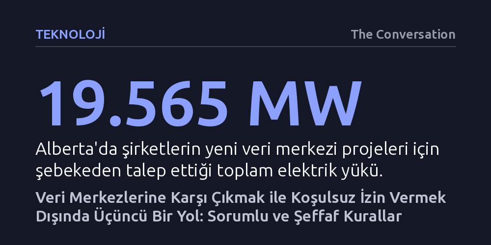

TEKNOLOJI · The Conversation · 2026-10-19
Veri merkezlerini ya tamamen durdurmak ya da koşulsuz kabul etmek sahte bir ikilemdir. Asıl çözüm; şebeke maliyetlerini halka yüklemeyen, su tüketimini denetleyen ve yerel topluluklara ölçülebilir fayda sağlayan bağlayıcı kurallar getirmektir.
Yapay zekâ ve bulut bilişimin getirdiği devasa kaynak tüketiminin kaçınılmaz olmadığını, doğru kurallar ve bağımsız denetimle kamu yararına yönlendirilebileceğini gösterir.

Bir hastanede hasta dosyası açıldığında ya da kasada temassız banka kartı okutulduğunda, yalnızca dijital bir işlem yapıldığı düşünülür. Oysa bu talepler havada asılı kalmaz; sunucuların, veri depolama ünitelerinin, yedek jeneratörlerin ve devasa soğutma sistemlerinin çalıştığı son derece somut, fiziksel binalara ulaşır. Veri merkezleri sanıldığı gibi masum depolar ya da mitolojik yapay zekâ fabrikaları değildir; elektrik, su ve araziye muazzam iştahı olan ağır sanayi altyapılarıdır.
Bugün dünya genelinde ve Kanada'da veri merkezlerine dair tartışmalar sığ bir ikileme sıkışmış durumda: Bu tesisleri çevreye ve şebekeye zarar verdikleri gerekçesiyle tamamen yasaklamak ya da ekonomik kazanç ve dijital dönüşüm uğruna hiçbir şart koşmadan kabul etmek. Oysa bu yaklaşım sahte bir tercihi dayatır. Toplumların önündeki tek seçenek teslim olmak ya da kapıları tamamen kapatmak değildir; şeffaf, düşük karbonlu, şebekeye yük bindirmeyen ve kalıcı kamu yararı üreten üçüncü bir yolu inşa etmek mümkündür.
Veri merkezlerinin çevreye etkisini değerlendirirken sektörde en çok Güç Kullanım Etkinliği (PUE) gibi oranlara başvurulur. Bu oran, tesisin tükettiği toplam elektriğin sunucuların kullandığı güce bölünmesiyle hesaplanır ve teorik olarak bire ne kadar yakınsa tesisin o kadar verimli olduğu varsayılır. Benzer şekilde su ve karbon kullanım etkinlikleri de hesaplanır. Ne var ki bu katsayılar tesisin iç işleyişindeki göreli verimliliği ölçer; sunucuların ürettiği işin faydasını veya tesisin yerel kaynaklar üzerindeki mutlak baskısını göstermez. Son derece verimli tasarlanmış bir tesis bile yerel bir su havzasını tüketebilir ya da bölgesel elektrik şebekesini felç edebilir.
Üstelik bu sınırlı göstergelerde bile büyük bir şeffaflık eksikliği yaşanıyor. Kanada Doğal Kaynaklar Bakanlığı'nın verilerine göre, ülkedeki veri merkezlerinin yalnızca yüzde 22'si bu verimlilik oranını kamuoyuyla paylaşıyor. Tablonun ciddiyetini anlamak için bölgesel taleplere bakmak yeterli: Alberta eyaletinde şirketlerin şebekeden talep ettiği toplam veri merkezi gücü yaklaşık 19.565 megavata ulaşmış durumda. Bu miktar, tüm eyaletin bugüne kadar kaydettiği yaklaşık 12.800 megavatlık tarihi zirve tüketimin bile çok üzerindedir. Uluslararası Enerji Ajansı'nın küresel veri merkezi elektrik tüketiminin 2025 ile 2030 arasında ikiye katlanacağını öngörmesi, baskının boyutunu daha da büyütüyor.
Bir veri merkezinin yerel şebekeye bağlanması, hatların güçlendirilmesi ve sistem güvenilirliğinin sağlanması ciddi maliyetler doğurur. Bu projelerin yarattığı doğrudan altyapı faturaları, hanelerin ve mevcut yerel işletmelerin sırtına yüklenmemeli; doğrudan projeyi geliştiren şirketler tarafından karşılanmalıdır. Ayrıca şirketlerin temiz enerji iddialarının gerçeği ne kadar yansıttığı da sorgulanmalıdır. Şirketler genellikle yıllık toplam tüketim ile üretimi dengeleyen yıllık mahsuplaşmaya sığınır; oysa rüzgârın esmediği veya güneşin olmadığı saatlerde şebekeden fosil yakıtlı elektrik çekerler. Gerçek anlamda temiz enerji taahhüdü, elektriğin tüketildiği saatte temiz kaynaklardan karşılandığı saatlik eşleştirmeyi gerektirir.
Tesislerin soğutma sistemleri de karmaşık bir takası barındırır. Soğutma teknolojileri suyu enerjiyle, enerjiyi suyla takas eder; bu yüzden her coğrafya için geçerli tek bir en iyi teknoloji yoktur. Kuraklık riski taşıyan bir havzada su tüketen buharlaşmalı soğutma yerine daha fazla elektrik harcayan sistemler tercih edilebilirken, suyun bol olduğu yerlerde denge değişebilir. Dolayısıyla su yönetimi, havzanın gerçek koşullarına ve kuraklık planlarına göre şekillendirilmelidir. Uygun altyapının ve alıcının bulunduğu durumlarda ise sunucuların ürettiği atık ısının bölge ısıtmasında değerlendirilmesi zorunlu bir kriter olarak ele alınmalıdır.
Kanada federal hükümetinin açıkladığı sorumlu veri merkezi geliştirme ilkeleri olumlu bir başlangıç olsa da bağlayıcı bir yasa veya ruhsat niteliği taşımıyor. İlkelerin temenniden ibaret kalmaması için proje bazında bağımsız denetimler yapılmalı ve taahhütlerden sapma olduğunda uygulanacak cezai yaptırımlar baştan belirlenmelidir. Yerel yönetimler, yerli halklar ve düzenleyici kurumlar; anlık elektrik talebini, yük profilini ve su tüketimini bağımsız verilerle izleyebilmelidir.
Veri merkezlerine toptan karşı çıkanların gözden kaçırdığı haklı bir nokta vardır: Tesisleri bütünüyle yasaklamak, kritik dijital hizmetlerde dışa bağımlılığı artırır ve ekonomik kazanımları başka bölgelere kaptırır. Ancak bu gerekçe, şirketlere koşulsuz imtiyaz tanınmasını ya da yerel toplulukların yok sayılmasını haklı çıkaramaz. Asıl mesele veri merkezlerini inşa edip etmemek değil; bu tesislerin kamusal kaynaklara ve yerel ekosistemlere dokunmadan önce hangi somut ve bağlayıcı şartları yerine getirmek zorunda olduğudur.